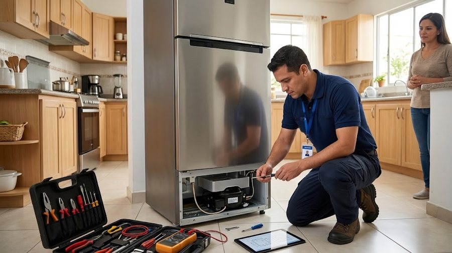

Servicio técnico de refrigeradoras Samsung en Avenida Balboa
Reparamos neveras y refrigeradoras Samsung a domicilio en Avenida Balboa: no enfría, escarcha, gotea, ruido, hielo y dispensador. Diagnóstico honesto, costo claro y garantía.

Técnico de refrigeradoras Samsung a domicilio en Avenida Balboa
En esta zona predominan los edificios y torres de apartamentos. Antes de ir coordinamos con la administración el horario, el ingreso de herramientas y el uso del ascensor de servicio, para que la visita no tenga contratiempos.
En apartamentos las refrigeradoras suelen estar empotradas en la cocina, con poco espacio detrás: revisamos la ventilación del condensador y la nivelación, causas frecuentes de ruido y de sobrecalentamiento.
Fallas que atendemos en Avenida Balboa
Refrigeradora se apaga y se prende sola
Ver causas →Refrigeradora hace saltar el breaker
Ver causas →Refrigeradora no hace hielo
Ver causas →Refrigeradora el dispensador no saca agua
Ver causas →Refrigeradora el agua o el hielo saben mal
Ver causas →Refrigeradora huele mal por dentro
Ver causas →Tipos de refrigeradora Samsung en Avenida Balboa
Preguntas frecuentes en Avenida Balboa
¿Atienden refrigeradoras Samsung en Avenida Balboa?
Sí, damos servicio técnico de refrigeradoras Samsung a domicilio en Avenida Balboa (Ciudad de Panamá). Escríbenos por WhatsApp y te confirmamos disponibilidad.
¿Cuánto tardan en llegar a Avenida Balboa?
Coordinamos visitas en 24 a 48 horas en la mayoría de las zonas.
¿Qué tipos de refrigeradora reparan?
Side by Side, French Door, congelador superior e inferior, con dispensador y con pantalla.
Zonas cercanas
¿Refrigeradora Samsung con falla en Avenida Balboa?
Escríbenos por WhatsApp con el modelo y el síntoma. Te confirmamos disponibilidad para tu zona en minutos.